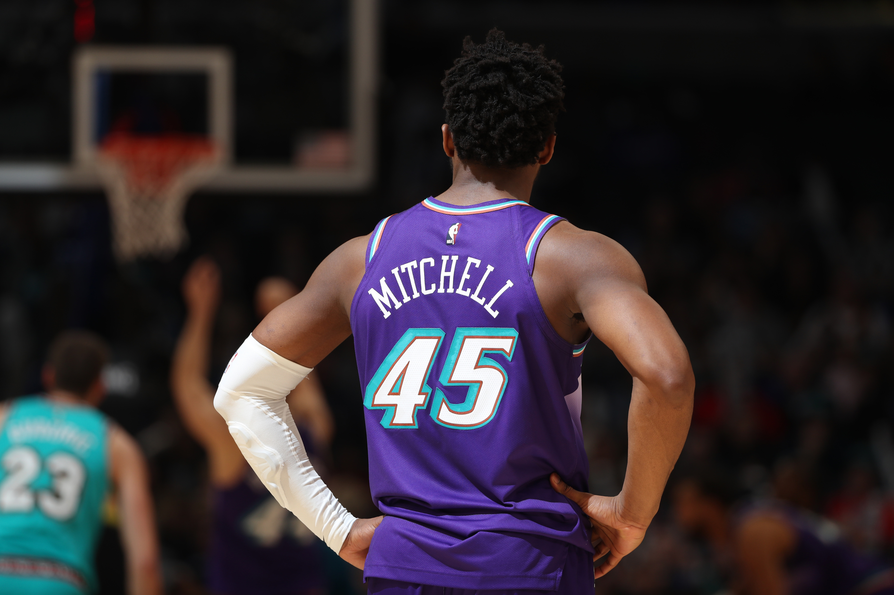

Favicon
Luke Hooper
Heritage God
PROFESSIONAL PAGE
nostalgia, ultra
- Chick-Fil-A
- Managed transactions and efficient fulfillment of orders in a fast-paced environment
- Personally trained new employees and taught necessary skills to succeed
- Maintained professional and courteous atmosphere focused on hospitality
- Primary Children’s Hospital
- Volunteered at Primary Children’s Hospital, working directly with patients, families, and healthcare professionals
- Oversaw a playroom in the hospital and spent time individually with patients
- The Church of Jesus Christ of Latter-day Saints
- Increased productivity by giving weekly trainings to other volunteers in various leadership roles
- Gained interpersonal skills by communicating and interacting with new people daily in a foreign language (Korean)


Back to top